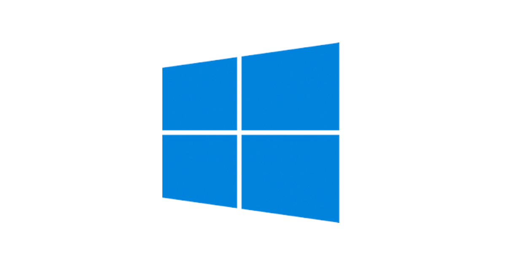

Why should you switch to Linux?

March 2nd, 2021
Windows vs Linux
| Windows | Linux |
|---|---|
|  |  |
| Windows uses different data drives like C: D: E to stored files and folders. | Unix/Linux uses a tree like a hierarchical file system. |
| Windows has different drives like C: D: E | There are no drives in Linux |
| Hard drives, CD-ROMs, printers are considered as devices | Peripherals like hard drives, CD-ROMs, printers are also considered files in Linux/Unix |
| Administrator user has all administrative privileges of computers. | Root user is the super user and has all administrative privileges. |
| In Windows, you cannot have 2 files with the same name in the same folder | Linux file naming convention is case sensitive. Thus, sample and SAMPLE are 2 different files in Linux/Unix operating system. |
Buying Linux-powered laptops should be easy, especially on big-name
manufacturers'
websites. But it isn't. You must employ workarounds to succeed or spend caches of money!
That is why downloading free Linux distributions and installing the operating system onto existing
computers is a typical avenue for adopting Linux. Some computer manufacturers sell Linux-only
hardware. Only a few of the major computer makers cater to providing Linux Inside. The challenge is
finding both those that do and being willing to pay a higher buy-in price.
All major laptop (notebook) hardware is supported by Linux. The important things to take into
account when looking to buy a Linux powered laptop are as follows to avoid any hardware
compatibility problems. Selecting correct specification is important. In this first part, I will
cover what to look out for when buying a Linux powered laptop.
Advantages of Linux -
There are many reasons and here is mine when I switched to Linux:
- Linux is stable, and you will hardly get a blue screen of death (BSOD).
- Faster boot times.
- High-quality free and open source software. For example, I often use Gimp, LibreOffice, Firefox, Inkscape, Krita, OpenShot, Blender and more to unleash your creativity and productivity. To watch movies or play music I can use VLC or MPV or Clementine/Rhythmbox players. You can find thousands of free and open source apps for Linux and easily install it using the command line or software center.
- Linux is secure by default. Very few viruses/malware exists, or many described threats in the news do not affect a Linux based laptop. You do not need an antivirus in Linux.
- You can try various windowing system as per your needs. You can do customization with icons, themes,Conky, panel, dock launchers, and more.
- Gaming on Linux very well supported. You can choose from thousands of games. You can use services such as Steam and GOG.